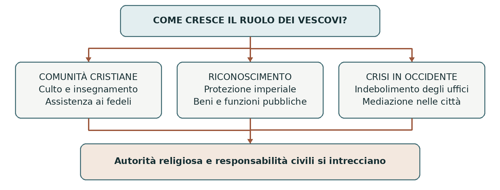
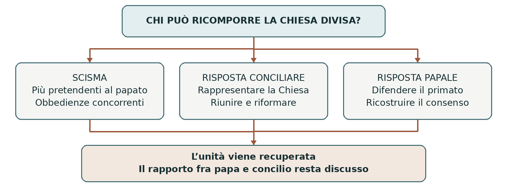

DAL MONDO ROMANO AL QUATTROCENTO
La Chiesa e il papato
Comunità cristiane potere pontificio e conciliarismo
Fra la tarda antichità e il Quattrocento la Chiesa di Roma accrebbe la propria autorità nell’Occidente cristiano. Questo cambiamento richiese molti secoli: coinvolse vescovi, imperatori, sovrani, concili e comunità di fedeli. Il papato divenne un centro di governo religioso e una potenza territoriale, ma dovette affrontare resistenze e divisioni al proprio interno.
0 Domanda generatrice
Come si costruì l’autorità del papa e chi poteva ricomporre la Chiesa quando più pontefici ne rivendicavano la guida? La domanda collega due problemi: la crescita di un centro di governo e i limiti del suo potere. Il conciliarismo cercò una risposta attribuendo al concilio generale un’autorità superiore a quella del papa.
In sintesi Il primato romano fu il risultato di una lunga trasformazione. La crisi dello scisma rese urgente stabilire chi avesse l’ultima parola sul governo della Chiesa.
1 Il mondo precedente
Nei primi secoli del cristianesimo le comunità si diffusero nelle città dell’Impero romano. Avevano tradizioni e pratiche differenti, ma erano collegate da viaggi, lettere, scambi e riunioni. Le persecuzioni, diverse per intensità e durata, non cancellarono questi rapporti. I cristiani si consideravano parte di una Chiesa comune, pur senza possedere l’organizzazione centralizzata che il papato avrebbe sviluppato più tardi.
Il vescovo guidava la comunità locale, assistito da presbiteri e diaconi. Nella concezione cristiana i vescovi erano successori degli apostoli. La loro scelta coinvolgeva, secondo tempi e luoghi, clero, fedeli e vescovi vicini. Non esisteva una procedura elettorale unica e immutabile; famiglie influenti e autorità politiche potevano intervenire.
Nel 313 gli accordi fra Costantino e Licinio riconobbero la libertà di culto ai cristiani. Nel 380 l’editto di Tessalonica indicò il cristianesimo niceno come riferimento religioso dell’autorità imperiale. I due momenti non coincidono: riconoscere un culto e sostenerlo come norma dell’Impero sono scelte diverse.
In sintesi Le comunità avevano già rapporti reciproci. Il sostegno imperiale ne cambiò la posizione pubblica e accrebbe il peso dei loro responsabili.
Le città e il governo dei vescovi
La cornice amministrativa romana
Le riforme di Diocleziano e Costantino, fra III e IV secolo, costruirono un’amministrazione più articolata. Nell’assetto tardoimperiale le prefetture raggruppavano diocesi civili, a loro volta composte da province. Le città, con il territorio circostante, restavano indispensabili per raccogliere imposte e organizzare la vita locale. L’Impero era una monarchia con un forte apparato centrale: definirlo una federazione di città indipendenti sarebbe fuorviante.
Livello o istituzione | Funzione essenziale |
|---|---|
Prefetture del pretorio | Grandi circoscrizioni governate da prefetti con importanti competenze civili e fiscali. |
Diocesi civili | Raggruppamenti di province, normalmente affidati a vicari dei prefetti. |
Province | Circoscrizioni rette da governatori civili; i comandi militari seguivano un’organizzazione distinta. |
Città e curie | Le élite dei curiali sostenevano il governo locale e gli obblighi fiscali. |
Defensor civitatis | Magistrato chiamato a tutelare la popolazione, soprattutto contro abusi e prepotenze. |
Due significati di diocesi. Nell’amministrazione romana la parola indicava un territorio formato da più province; nell’organizzazione ecclesiastica indica il territorio affidato a un vescovo. I due usi non devono essere sovrapposti.
Dalla guida religiosa alla mediazione civile
La Chiesa ricevette patrimoni e riconoscimenti giuridici; i vescovi si occuparono anche di controversie, assistenza e rapporti con le autorità. In alcune città la loro preparazione e le loro reti sociali ne fecero interlocutori importanti. L’accesso all’episcopato poteva seguire una carriera ecclesiastica, ma anche provenire dall’ambiente dei funzionari imperiali: Ambrogio, eletto a Milano nel 374, ne è un esempio.

In sintesi Il vescovo non sostituì ovunque e subito il governo civile. Il suo ruolo crebbe con tempi diversi, grazie alle funzioni religiose, alle risorse della comunità e alla capacità di mediazione.
2 Le fratture
La crisi del potere imperiale in Occidente
Dal V secolo guerre, migrazioni e formazione dei regni romano-germanici modificarono profondamente l’Occidente. Il 476, data della deposizione di Romolo Augustolo, segna convenzionalmente la fine dell’Impero romano d’Occidente; non la scomparsa improvvisa di tutte le sue istituzioni. In molte città continuarono tradizioni giuridiche e amministrative romane.
L’Impero d’Oriente, con centro a Costantinopoli, sopravvisse. Il vescovo di Roma agì quindi in un quadro diverso da quello delle grandi sedi orientali. In Occidente la debolezza o la distanza delle autorità imperiali apriva spazi di iniziativa; in Oriente l’imperatore restava un interlocutore molto forte anche nelle questioni ecclesiastiche.
La contesa sulle nomine ecclesiastiche
Nel Medioevo vescovi e abati amministravano terre, ricevevano entrate e potevano esercitare poteri pubblici. La scelta delle persone da insediare in questi uffici aveva perciò conseguenze religiose e politiche. Sovrani e aristocrazie cercavano di influenzarla; i riformatori denunciavano la compravendita delle cariche, detta simonia, e la subordinazione degli uffici ecclesiastici a interessi dinastici.
La riforma dell’XI secolo e la lotta per le investiture resero aperto lo scontro fra papato e impero. Il problema non era separare due sfere già nettamente distinte: era definire confini e competenze dentro una società in cui religione e governo erano strettamente collegati.
La divisione al vertice della Chiesa latina
Nel 1378 la contestazione dell’elezione di Urbano VI portò all’elezione di un altro pontefice, Clemente VII. Si formarono due obbedienze: gruppi di fedeli, clero e Stati che riconoscevano papi diversi. Lo scisma d’Occidente pose un problema radicale: se ciascun pretendente sosteneva di essere il capo legittimo della Chiesa, chi poteva giudicare fra loro?
Tensione di lunga durata | Evento che la rende evidente | Problema aperto |
|---|---|---|
Rapporti fra Chiesa e istituzioni romane | Crisi dell’Occidente nel V secolo | Chi assicura continuità e protezione nelle città? |
Interessi religiosi e politici nelle nomine | Conflitto sulle investiture nell’XI secolo | Chi sceglie i vescovi e conferisce loro i poteri? |
Autorità del papa e unità ecclesiale | Doppia elezione del 1378 | Chi può risolvere una crisi del papato? |
In sintesi Le crisi non produssero un esito obbligato. In ciascuna fase i protagonisti cercarono nuove forme di autorità, collaborazione o controllo.
3 Attori gruppi e conflitti
Una pluralità di interessi
La storia del papato non coincide con la sola successione dei pontefici. Le decisioni coinvolgevano istituzioni diverse, capaci di collaborare in un momento e di opporsi in un altro. Anche all’interno del clero e delle dinastie esistevano orientamenti contrastanti.
Attori | Risorse e interessi | Limiti e tensioni |
|---|---|---|
Vescovo di Roma | Prestigio apostolico, diritto, uffici della curia e domini territoriali. | La rivendicazione del primato deve tradursi in un’obbedienza effettiva. |
Vescovi e clero locale | Guida religiosa, patrimoni, radicamento nelle città. | Rapporti con il papa, i sovrani e le élite locali. |
Cardinali | Collaborazione al governo centrale ed elezione del pontefice. | Possono sostenere il papa oppure contestarne decisioni e legittimità. |
Imperatori e monarchie | Forza militare, protezione, influenza sulle nomine. | Non controllano stabilmente tutti i soggetti ecclesiastici. |
Concili e giuristi | Discussione delle norme, interpretazione del diritto, rappresentanza ecclesiale. | La composizione e l’autorità dell’assemblea possono essere contestate. |
Fedeli e comunità | Partecipazione alla vita religiosa, donazioni, reti assistenziali e richieste di riforma. | Scarso accesso diretto ai vertici; subiscono gli effetti delle divisioni. |
Le persone comuni dentro i conflitti
Uno scisma poteva dividere una diocesi, creare dispute sulle nomine e rendere incerto a chi versare entrate o prestare obbedienza. Le sanzioni ecclesiastiche avevano conseguenze sulla vita collettiva. L’interdetto, che limitava in un territorio molte celebrazioni, colpiva anche persone estranee alle decisioni dei governanti.
Monasteri e comunità femminili, confraternite e opere assistenziali partecipavano alla vita della Chiesa. Le donne erano escluse dall’episcopato e dal cardinalato, ma potevano esercitare influenza spirituale e politica: gli appelli di Caterina da Siena per il ritorno del papa a Roma mostrano una delle forme possibili di questa partecipazione. Il ritorno dipese però anche da decisioni e pressioni politiche.
Tre parole da distinguere
Il primato riguarda la posizione preminente del vescovo di Roma; la giurisdizione è il potere di prendere decisioni vincolanti; il potere temporale è il governo di territori e sudditi. Affermare un primato religioso non significa descrivere automaticamente un dominio politico su tutti i regni cristiani.
In sintesi I conflitti nascevano dalla sovrapposizione di autorità, risorse e obiettivi. Per seguirne l’evoluzione occorre distinguere le pretese dei protagonisti da ciò che riuscivano a ottenere.
4 Il processo storico
La crescita del primato romano
Roma godeva del prestigio dell’antica capitale imperiale e della memoria del martirio di Pietro e Paolo, ai quali la tradizione cristiana legava la comunità cittadina. Questa eredità favorì l’autorevolezza della sede. Non esisteva tuttavia, fin dalle origini, un sistema di governo identico al papato medievale: l’estensione delle sue prerogative fu oggetto di discussione.
Anche in Oriente le sedi non erano tutte sullo stesso piano. Alessandria, Antiochia e Costantinopoli, e in seguito Gerusalemme, ebbero posizioni particolari. I concili definivano dottrine e regole, intervenendo anche nei rapporti fra queste Chiese. Il rilievo di Roma conviveva con responsabilità e autonomie delle altre sedi.
Snodo | Significato storico |
|---|---|
Sardica 343 circa | I vescovi rimasti all’assemblea riconoscono a Roma un ruolo nei ricorsi di vescovi deposti. La ricezione delle decisioni non è universale. |
Costantinopoli 381 | Il canone 3 assegna a Costantinopoli il posto d’onore dopo Roma, richiamandone il ruolo di nuova capitale. |
Leone I 440–461 | Rafforza l’idea che il vescovo romano, successore di Pietro, abbia una responsabilità verso l’intera Chiesa. |
Calcedonia 451 | Il canone 28 accresce le prerogative di Costantinopoli. Leone I lo contesta: il significato del primato resta controverso. |
Gelasio I 492–496 | Distingue autorità sacerdotale e potere regio, sottolineando la responsabilità religiosa dei sacerdoti anche verso i sovrani. |
Il riconoscimento imperiale e i suoi limiti
Nel VI secolo Giustiniano riconobbe l’alto rango della sede romana, ma intervenne con energia nella vita ecclesiastica. Il riconoscimento formale di Roma non equivaleva alla rinuncia dell’imperatore a occuparsi di dottrina, concili e nomine. La storia del primato comprende dunque sia affermazioni di principio sia negoziazioni concrete.
Nell’alto Medioevo la distanza da Costantinopoli, i rapporti con i Longobardi e l’alleanza con i Franchi modificarono ulteriormente la posizione del papato. Le donazioni franche dell’VIII secolo contribuirono alla formazione di un dominio territoriale pontificio in Italia. Alla guida religiosa si affiancava un potere di governo su terre e popolazioni.
In sintesi Il primato romano crebbe grazie a tradizioni religiose e circostanze politiche. Non fu riconosciuto ovunque nello stesso modo, né cancellò gli altri centri cristiani.
Impero investiture e comuni
Dagli Ottoni alla riforma dell’XI secolo
Gli imperatori della dinastia degli Ottoni si appoggiarono a vescovi e abati ai quali affidavano beni e poteri pubblici. Gli uffici ecclesiastici non erano normalmente ereditari: questo poteva contrastare la formazione di dinastie signorili. Tuttavia i vescovi non erano tutti conti, né erano sempre fedeli esecutori della volontà imperiale.
Nel 962 Ottone I fu incoronato imperatore. Il Privilegium Othonis confermava diritti pontifici e rafforzava il controllo imperiale sull’elezione papale. Non trasformava semplicemente il papa in un funzionario nominato dall’imperatore: procedure, giuramenti, pressioni politiche e rapporti di forza si intrecciavano.
La riforma cercò di sottrarre la Chiesa a condizionamenti laici e di correggere abusi. Nel 1059 Niccolò II attribuì ai cardinali vescovi un ruolo decisivo nell’elezione del pontefice. Con Gregorio VII lo scontro si inasprì: il Dictatus papae del 1075, una raccolta di proposizioni nel registro pontificio, esprimeva forti rivendicazioni papali. Non era un semplice editto elettorale.
Il conflitto con Enrico IV, aperto nel 1076, passò attraverso scomuniche, contrapposizioni e la penitenza di Canossa nel 1077, senza esaurirsi in quell’episodio. L’accordo arrivò con altri protagonisti: Callisto II ed Enrico V, nel concordato di Worms del 1122.
Aspetto | Soluzione di Worms |
|---|---|
Autorità spirituale | L’imperatore rinuncia all’investitura con anello e pastorale; si riconoscono elezione canonica e libera consacrazione. |
Poteri temporali | Il sovrano può conferire le regalie con lo scettro. Si distinguono i simboli e le funzioni delle due investiture. |
Differenze territoriali | Nel regno germanico l’imperatore può assistere alle elezioni; il conferimento delle regalie precede normalmente la consacrazione. Negli altri territori imperiali segue entro sei mesi. |
Il conflitto continua con Barbarossa
Federico I Barbarossa, eletto re nel 1152, scese in Italia nel 1154 e fu incoronato imperatore nel 1155. Lo scontro con i comuni e con Alessandro III ebbe passaggi decisivi nella distruzione di Milano del 1162, nella Lega lombarda del 1167 e nella sconfitta imperiale a Legnano nel 1176. La pace di Venezia del 1177 regolò il rapporto con il papa; la pace di Costanza del 1183 riconobbe ampie autonomie ai comuni, entro la sovranità imperiale.
In sintesi Worms distinse funzioni religiose e poteri temporali, ma non risolse ogni conflitto. Il confronto successivo coinvolse anche città e coalizioni politiche.
Il governo pontificio e i concili
La costruzione di un centro amministrativo
Fra XII e XIII secolo il papato rafforzò la curia, l’insieme degli uffici e delle persone che collaboravano al governo centrale. I tribunali ricevevano ricorsi, i legati rappresentavano il pontefice, la cancelleria produceva documenti. Lo sviluppo del diritto canonico, raccolto e commentato dai giuristi, rese più sistematico il funzionamento delle istituzioni ecclesiastiche.
I cardinali divennero centrali nell’elezione del papa e nel governo della Chiesa. Le regole elettorali si precisarono: nel 1179 venne fissata la maggioranza dei due terzi. Giuramenti di fedeltà, riserve su nomine e benefici, contributi e prelievi rafforzavano i legami con Roma. Questo processo non eliminò le elezioni locali né rese ogni dignitario un dipendente privo di iniziativa.
L’accentramento poteva favorire uniformità e controllo, ma aumentava anche il valore politico ed economico degli uffici. Gli abusi e il nepotismo, cioè il favore accordato ai parenti, alimentarono critiche. Spiegare tutta la corruzione con il solo potere del papa nasconderebbe il peso delle dinastie, delle aristocrazie e dei meccanismi locali.
Che cosa decideva un concilio
Un concilio era un’assemblea ecclesiastica che poteva discutere fede, disciplina, giustizia e riforma. Sovrani e ambasciatori potevano assistervi o influenzarne i lavori, ma non era un parlamento moderno fondato sul voto eguale dei cittadini. Le decisioni, dette canoni, avevano spesso effetti anche sulla società e sulla politica.
Nel concilio di Lione del 1245, Innocenzo IV pronunciò la deposizione di Federico II, dopo un confronto nel quale l’imperatore era difeso da Taddeo di Sessa. Il provvedimento rivendicava il diritto di giudicare il sovrano; non produsse l’immediata perdita del suo potere. L’episodio mostra il peso politico del concilio, ma non dimostra da solo la sua superiorità sul papa.
A Lione fu anche disposto, con eccezioni, un contributo del ventesimo delle entrate ecclesiastiche per tre anni destinato alla Terra Santa. La decisione documenta la capacità di mobilitare risorse comuni. Non significa che un’assemblea parlamentare controllasse in generale le spese del pontefice.
In sintesi Il rafforzamento di Roma procedette insieme alla produzione di norme e all’attività conciliare. Proprio dentro questa tradizione si sviluppò la domanda sui limiti dell’autorità papale.
Avignone e lo scisma d’Occidente
Il papato e la monarchia francese
Fra la fine del Duecento e l’inizio del Trecento Bonifacio VIII si scontrò con Filippo IV il Bello, re di Francia, soprattutto sui rapporti fra potere regio e autorità ecclesiastica. La bolla Unam sanctam del 1302 riaffermò una forte concezione della superiorità pontificia. Nel 1303, ad Anagni, uomini legati al re e ai Colonna catturarono temporaneamente il papa: l’episodio mostrò la vulnerabilità politica del pontefice.
Dopo altri passaggi, Clemente V, eletto nel 1305, stabilì la corte ad Avignone nel 1309. Non fu un trasferimento immediato disposto da Bonifacio VIII. La città si trova nell’attuale Francia, ma allora apparteneva ai conti di Provenza; fu acquistata dal papato nel 1348. La monarchia francese esercitò una forte influenza senza controllare ogni scelta dei papi.
Ad Avignone si svilupparono uffici, finanze e reti diplomatiche. L’espressione tradizionale cattività avignonese sottolinea la dipendenza dalla Francia, ma è un’interpretazione polemica e non descrive una semplice prigionia. Gregorio XI tornò a Roma nel 1377, dopo un precedente rientro temporaneo di Urbano V fra 1367 e 1370.
I Templari e i limiti della decisione papale
La vicenda dei Templari mostra il peso delle pressioni regie. Dopo gli arresti ordinati in Francia nel 1307, Clemente V soppresse l’ordine nel 1312, durante il concilio di Vienne, presso Lione. La bolla Vox in excelso adottò un provvedimento di autorità, non una sentenza definitiva che dimostrasse l’eresia dell’intero ordine. Il testo richiamava l’approvazione conciliare; la pressione di Filippo IV fu decisiva. Vienne non è Vienna, in Austria.
Il 1378 e la nascita di due obbedienze
Alla morte di Gregorio XI fu eletto a Roma Urbano VI. In seguito molti degli stessi cardinali contestarono la validità dell’elezione, sostenendo che si fosse svolta sotto la pressione della folla. Elessero quindi a Fondi Clemente VII, che si insediò ad Avignone nel 1379. La crisi non nacque da due elezioni simultanee condotte fin dall’inizio da un blocco italiano e uno francese.
Sovrani, città e diocesi si schierarono con l’uno o con l’altro. Gli interessi politici si intrecciarono con il problema religioso della legittimità. Lo scisma d’Occidente del 1378–1417 divise la Chiesa latina intorno a chi fosse il vero papa; va distinto dalla separazione fra Roma e le Chiese orientali, convenzionalmente associata al 1054.
In sintesi La crescita degli uffici non impedì la crisi dell’autorità. Quando due successioni rivali si consolidarono, la soluzione non poteva dipendere dalla sola volontà di uno dei contendenti.
La risposta del conciliarismo
Dalle discussioni giuridiche al concilio di Pisa
Il conciliarismo attribuiva al concilio generale, rappresentante della Chiesa, un’autorità superiore a quella del papa. Aveva radici nelle discussioni dei canonisti medievali su come intervenire contro un pontefice che danneggiasse la fede o l’unità ecclesiale. Nel Trecento Marsilio da Padova e Guglielmo di Ockham criticarono le pretese papali, con argomenti differenti: non furono autori di una teoria unica e identica.
Lo scisma trasformò queste discussioni in una possibile soluzione politica. Nel 1409 il concilio di Pisa dichiarò deposti i due contendenti ed elesse Alessandro V. Poiché i precedenti pontefici non riconobbero la decisione, le obbedienze divennero tre. Una deliberazione non bastava senza il consenso necessario ad applicarla.
Costanza e la ricomposizione dell’unità
Il concilio di Costanza del 1414–1418, sostenuto dal re dei Romani Sigismondo, affrontò la crisi. Il voto per nazioni, raggruppamenti ecclesiastici e geografici diversi dagli Stati nazionali attuali, limitò il predominio numerico di alcuni gruppi. Con Haec sancta del 1415 il concilio rivendicò un’autorità ricevuta da Cristo, vincolante anche per il papa nelle questioni di fede, scisma e riforma.
I tre contendenti seguirono percorsi differenti: Giovanni XXIII dell’obbedienza pisana fu deposto; Gregorio XII di quella romana rinunciò; Benedetto XIII di quella avignonese fu deposto e perse quasi tutti i sostegni, pur continuando a rivendicare il titolo. L’elezione di Martino V, l’11 novembre 1417, ricompose l’unità largamente riconosciuta della Chiesa latina.
Il decreto Frequens del 1417 prescrisse altri concili dopo cinque anni, poi sette, quindi ogni dieci. Si voleva rendere la riforma un’attività regolare. Il significato e l’autorità delle deliberazioni conciliariste furono però contestati: la soluzione dello scisma non fissò un equilibrio accettato da tutti per il futuro.
Basilea Ferrara e Firenze
Il concilio aperto a Basilea nel 1431 entrò in conflitto con Eugenio IV. Il pontefice lo trasferì a Ferrara nel 1438 e poi a Firenze nel 1439. Una parte dell’assemblea rimase a Basilea e nel 1439 elesse Amedeo VIII di Savoia, con il nome di Felice V, contro Eugenio: si produsse una nuova divisione.
A Firenze, nel 1439, l’accordo di unione con rappresentanti delle Chiese orientali riaffermò il primato romano, ma non ottenne un’accettazione duratura in Oriente. Il conciliarismo perse progressivamente sostegno politico; Felice V abdicò nel 1449. La prevalenza del papato maturò nel tempo, non con una vittoria istantanea e universalmente riconosciuta a Firenze.
In sintesi Il concilio riuscì a ricomporre lo scisma, ma non consolidò un controllo stabile sul papato. Il consenso di principi e comunità rimase decisivo per l’efficacia di entrambe le autorità.
5 Le fonti in dialogo
I documenti permettono di distinguere una rivendicazione di autorità dai suoi effetti. Confrontiamo due atti ecclesiastici che attribuiscono un ruolo decisivo a istituzioni differenti. I testi seguenti sono parafrasi didattiche, non citazioni letterali.
Fonte A Haec sancta del 1415
Provenienza e destinatari. Decreto della quinta sessione del concilio di Costanza, 6 aprile 1415, rivolto alla Chiesa e a coloro che dovevano riconoscere le sue decisioni. La crisi dello scisma costituisce il contesto immediato.
Contenuto. L’assemblea dichiara di rappresentare la Chiesa e di ricevere la propria autorità direttamente da Cristo. Anche chi detiene la dignità papale deve obbedirle nelle questioni relative alla fede, alla soluzione dello scisma e alla riforma della Chiesa.
Scopo e limite. Il decreto vuole rendere possibile un intervento al di sopra dei contendenti. Dimostra ciò che il concilio rivendica; non prova che il suo primato fosse riconosciuto in modo definitivo da tutti. La portata e la ricezione del testo rimasero controverse.
Fonte B Laetentur caeli del 1439
Provenienza e destinatari. Bolla di Eugenio IV e decreto di unione del concilio di Firenze, 6 luglio 1439, formulato con l’assenso dei rappresentanti orientali aderenti all’accordo. Si rivolge alle Chiese coinvolte nel progetto di unione.
Contenuto. Il documento riconosce al pontefice romano, successore di Pietro, il primato nella Chiesa universale e la potestà di guidarla e governarla. Richiama anche gli atti conciliari, i canoni e i diritti degli altri patriarcati.
Scopo e limite. L’atto cerca di ricomporre la separazione fra Oriente e Occidente e rafforza la posizione papale. La sua promulgazione non coincide con un’unione stabile: l’accordo incontrò forti opposizioni nelle Chiese orientali.
Domanda di confronto | Haec sancta | Laetentur caeli |
|---|---|---|
Quale autorità viene messa in primo piano? | Il concilio rappresentativo della Chiesa. | Il pontefice romano come successore di Pietro. |
Quale crisi si affronta? | Lo scisma e la riforma della Chiesa latina. | La separazione fra le Chiese orientali e Roma. |
Che cosa va verificato oltre il testo? | Obbedienza dei contendenti e ricezione dei decreti. | Accettazione dell’unione e applicazione delle decisioni. |
Lavora sulle fonti. Spiega perché i due atti non sono fotografie neutrali della realtà. Quali comportamenti cercano di ottenere? Perché la loro distanza di ventiquattro anni non basta, da sola, a dimostrare un cambiamento completo e definitivo?
In sintesi Le norme esprimono progetti di governo. Per ricostruire gli esiti storici bisogna confrontarle con consenso, opposizioni e comportamenti effettivi.
6 Conseguenze e nuovo assetto
Una Chiesa più accentrata e ancora plurale
Nel lungo periodo il papato costruì strumenti di governo più estesi: norme comuni, uffici, tribunali e reti diplomatiche. Le comunità locali non scomparvero, ma furono inserite in rapporti più stretti con il centro romano. Le modalità concrete variarono secondo territori, privilegi e accordi con i sovrani.
La fine dello scisma ricostituì un vertice riconosciuto nella Chiesa latina. Nel Quattrocento i papi recuperarono autorità e rafforzarono il governo dello Stato della Chiesa. Al tempo stesso dovettero negoziare con monarchie che cercavano di controllare le Chiese nei propri regni. Il declino politico del conciliarismo non cancellò né l’attività dei concili né le richieste di riforma.
Il papato mantenne pretese universali, ma non ottenne un’obbedienza universale di fatto. Le Chiese orientali conservarono tradizioni e assetti differenti. Nemmeno in Occidente il pontefice controllava ogni scelta dei re e delle comunità: l’autorità dichiarata e il potere effettivo restavano distinti.
In sintesi La Chiesa latina recuperò un vertice comune; la discussione sui limiti del potere e sulla riforma rimase aperta. Questo esito consente di rispondere alla domanda iniziale.
7 Conclusione
L’autorità papale si costruì attraverso il prestigio religioso di Roma, l’iniziativa dei pontefici e lo sviluppo di strumenti giuridici e amministrativi. Le trasformazioni politiche crearono occasioni, ma anche dipendenze e rivalità. Durante lo scisma il concilio offrì una via per ricomporre l’unità; non riuscì però a imporre stabilmente la propria superiorità al papa.

Sintesi finale
Le comunità cristiane nacquero plurali e collegate fra loro.
Il sostegno imperiale accrebbe il ruolo pubblico dei vescovi.
Roma trasformò progressivamente il proprio prestigio in autorità di governo.
Le investiture mostrarono l’intreccio fra poteri religiosi e politici.
Lo scisma d’Occidente mise in crisi il vertice della Chiesa latina.
Il concilio ricompose l’unità, ma il primato papale tornò a prevalere.
Le richieste di riforma sopravvissero alla soluzione della crisi.
Coordinate e linea del tempo
Spazio. Il percorso parte dal Mediterraneo romano e si concentra poi sull’Occidente latino. Roma e Costantinopoli sono i principali punti di riferimento; Avignone, Pisa, Costanza, Basilea, Ferrara e Firenze diventano sedi decisive delle crisi e dei tentativi di soluzione.
Data | Snodo | Perché conta |
|---|---|---|
313 e 380 | Libertà di culto e sostegno al cristianesimo niceno. | Cambia il rapporto fra comunità cristiane e Impero. |
381 e 451 | Concili di Costantinopoli e Calcedonia. | Si definiscono rapporti fra grandi sedi ecclesiastiche. |
476 | Fine convenzionale dell’Impero d’Occidente. | Si trasforma il quadro politico in cui agiscono i vescovi. |
962–1122 | Ottoni, riforma e lotta per le investiture. | Dalla collaborazione si passa al conflitto e al compromesso di Worms. |
1176–1183 | Legnano, Venezia e Costanza. | Impero, papato e comuni rinegoziano i rapporti. |
1245 | Concilio di Lione. | Il papa dichiara deposto Federico II. |
1309–1377 | Periodo avignonese. | La curia cresce in un contesto di forte influenza francese. |
1378 e 1409 | Scisma e concilio di Pisa. | Le obbedienze rivali diventano prima due, poi tre. |
1414–1418 | Concilio di Costanza. | Martino V, eletto nel 1417, ricompone l’unità. |
1431–1449 | Da Basilea alla rinuncia di Felice V. | Il tentativo di subordinare il papa al concilio perde forza. |
Vocabolario essenziale
Primato Preminenza di una sede ecclesiastica sulle altre.
Giurisdizione Potere di giudicare e prendere decisioni vincolanti.
Potere temporale Governo politico di territori e popolazioni.
Investitura Atto con cui si conferiscono un ufficio o determinati diritti.
Simonia Compravendita di beni spirituali o cariche ecclesiastiche.
Curia Organi e collaboratori del governo pontificio.
Diritto canonico Insieme delle norme che regolano la vita della Chiesa.
Concilio Assemblea ecclesiastica che discute e delibera su questioni comuni.
Scisma Rottura della comunione e dell’unità ecclesiastica.
Obbedienza In questo contesto, insieme di chi riconosce un certo pontefice.
Conciliarismo Teoria della superiorità del concilio generale sul papa.
Antipapa Pretendente al papato contrapposto al pontefice riconosciuto come legittimo nella ricostruzione successiva della Chiesa.
Studiare e argomentare
Saperi irrinunciabili
• Le prime comunità erano autonome in molti aspetti, ma possedevano legami e un’idea di appartenenza comune.
• Il 313 e il 380 indicano due passaggi differenti nel rapporto fra cristianesimo e Impero.
• Il ruolo civile dei vescovi crebbe gradualmente e non fu identico in tutte le città.
• Diocesi civile romana e diocesi ecclesiastica indicano strutture diverse.
• Il prestigio di Roma dipendeva dalla sua storia imperiale e dalla tradizione apostolica.
• Primato religioso, giurisdizione e potere temporale devono essere distinti.
• Le investiture erano contese perché le cariche ecclesiastiche comportavano anche beni e poteri pubblici.
• Worms distinse investitura spirituale e conferimento delle regalie senza separare completamente religione e politica.
• L’accentramento papale si appoggiò a diritto canonico, curia, cardinali e legati.
• Il periodo avignonese fu segnato da influenza francese e sviluppo amministrativo; non fu una semplice prigionia.
• Lo scisma d’Occidente riguardò la legittimità del vertice della Chiesa latina.
• Pisa non risolse la crisi; Costanza portò all’elezione largamente riconosciuta di Martino V.
• Il conciliarismo cercò di attribuire alla rappresentanza della Chiesa un’autorità superiore al papa.
• Il papato recuperò il primato politico nella Chiesa latina, ma le esigenze di riforma e i problemi di consenso restarono aperti.
Attività di comprensione
1 Spiegare un processo. Ricostruisci in dieci righe come il vescovo acquisì responsabilità civili. Distingui condizioni generali ed esempi locali.
2 Confrontare. Indica una differenza e un collegamento fra lotta per le investiture e conciliarismo. Chi contesta chi, e su quale competenza?
3 Leggere le fonti. Confronta Haec sancta e Laetentur caeli: quale autorità legittimano, con quale argomento e per risolvere quale crisi?
4 Argomentare. Discuti la tesi: “Un decreto può risolvere da solo una crisi di autorità”. Usa Pisa, Costanza e Firenze come prove.
5 Correggere una semplificazione. Riscrivi: “Il papato ad Avignone apparteneva al re di Francia” e “Nel 1439 tutti accettarono il primato romano”. Motiva entrambe le correzioni.
Percorso di ripasso. Prima ricostruisci la cronologia; poi spiega i passaggi con le parole del vocabolario. Infine prova a rispondere alla domanda generatrice senza limitarti a elencare date e papi.